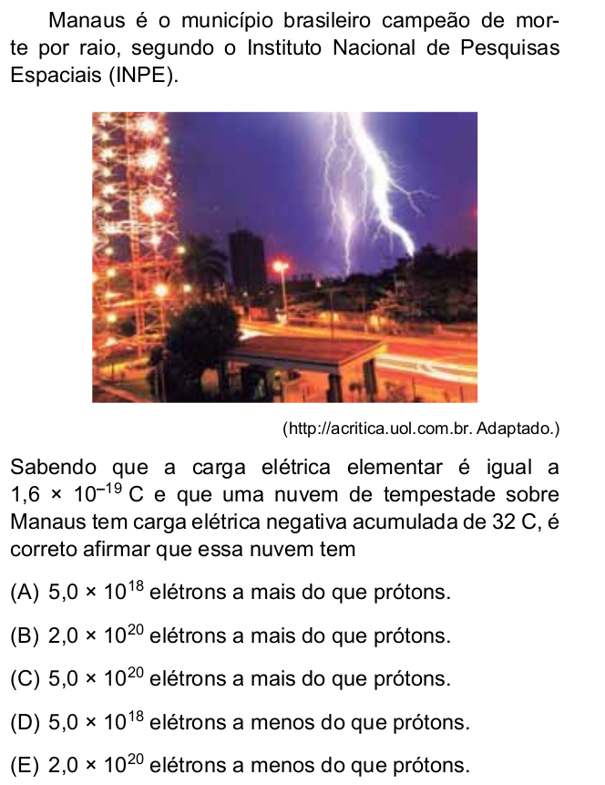

Questões de revisão: Carga elétrica
Questão 1
a) Quais são as partículas básicas que constituem a matéria?
b) Explique por que um átomo é eletricamente neutro em condições normais.
c) Explique por que, em um átomo, os elétrons são as partículas que orbitam o núcleo, e não os prótons?
Questão 3
a) O que deve acontecer para que um átomo fique com carga \(+ e\)?
b) O que deve acontecer para que um átomo fique com carga \(- 3e \)
Questão 4
a) Cacule a carga elétrica total (em Coulombs) de um ojeto que possui \( 3 \times 10^{12}\) elétrons.
b) Quantos elétrons precisam ser removidos de um corpo neutro para que ele adquira uma carga de \(+4,8 \times 10^{-12}\, C\)
Questão 5 - SIS-UEA-2014
